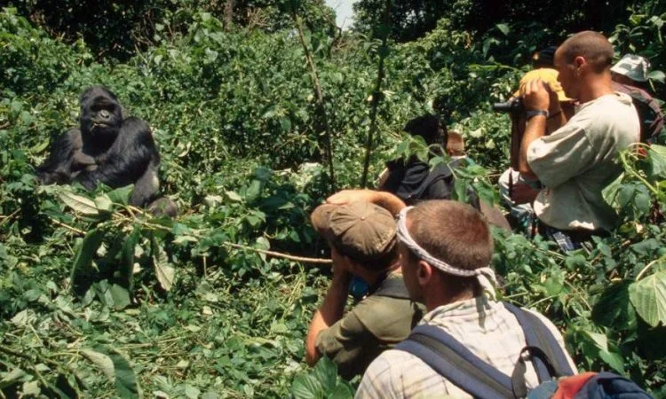
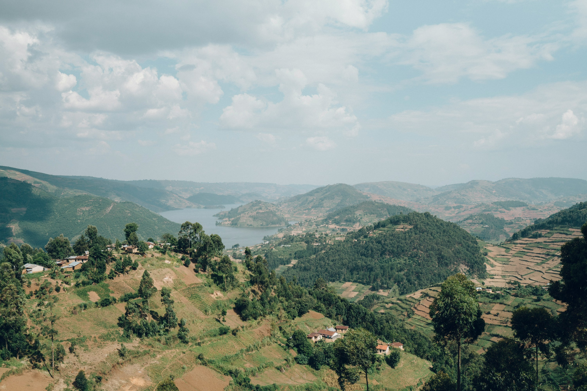

Uganda Tours From the UK
Ideal for travellers looking for classic Uganda tours from the UK with gorilla trekking, wildlife safaris, and smooth international arrival planning via Entebbe.
Plan UK TripExplore Uganda
Plan Uganda safaris, gorilla trekking, and tailor-made holidays for travellers from the UK, USA, Germany, Canada, Australia, and beyond.
Explore Destinations Plan Your TripWe help match the right Uganda itinerary to where travellers are coming from, whether you are searching for Uganda tours from the UK, Uganda gorilla trekking from the USA, or Uganda safari holidays from Germany.
Ideal for travellers looking for classic Uganda tours from the UK with gorilla trekking, wildlife safaris, and smooth international arrival planning via Entebbe.
Plan UK TripBuilt for long-haul visitors searching for Uganda gorilla trekking from the USA, often paired with Bwindi, Kibale, and a short safari extension.
Plan USA Gorilla TripGreat for travellers comparing Uganda safari options from Germany, especially wildlife-focused routes through Murchison Falls, Queen Elizabeth, and Lake Mburo.
Plan Germany SafariUseful for travellers in Canada planning longer Uganda holidays that combine gorillas, chimpanzees, culture, and scenic relaxation at Lake Bunyonyi.
Plan Canada HolidayDesigned for visitors researching Uganda adventure travel from Australia, including trekking, rafting, wildlife, and extended East Africa combinations.
Plan Australia Adventure
Home to mountain gorillas and lush rainforest.
View Details
Experience breathtaking waterfalls and wildlife safaris.
View Details
A serene lake surrounded by stunning hills and villages.
View Details
Explore Bwindi’s gorilla habitats with expert guides.
Request This Trip
Safari through Murchison Falls National Park.
Request This Trip
Discover local communities and scenic beauty.
Request This TripThe site is built around Uganda only, with destination pages, tours, and blog guides designed to help you compare routes, parks, permits, and trip styles more seriously.
You can move from inspiration to action through destinations, tours, the blog archive, and a structured custom trip planner instead of being pushed into a generic instant-booking flow.
Email, phone, WhatsApp, contact forms, and the trip planner are all available on-site, which gives travelers more than one way to ask detailed questions before committing.
Privacy, booking terms, and souvenir refund policies are published on the site so visitors can review expectations before submitting details or placing an order.
Browse a year of Uganda articles, route ideas, planning guides, and destination pieces to understand the depth behind the brand.
Browse ArchiveUse the structured planner to specify destinations, travel style, and timing instead of sending a vague inquiry.
Open PlannerReach the team through email, phone, or WhatsApp if you prefer to ask questions before sharing a full travel brief.
View Contact OptionsReview privacy, booking, and returns information before you submit personal details or place a souvenir order.
Review PoliciesEverything on the site is built around Uganda routes, not broad generic East Africa sales copy. That helps you compare parks, permits, travel pace, and combinations with more clarity.
Instead of forcing a fixed package, the planner lets you start with what matters most to you: gorillas, safari, birding, culture, honeymoon travel, or a balanced first-time route.
You can move from destination reading to tour ideas to trip enquiry without leaving the site, which makes planning feel more consistent and less confusing.
When you are ready, you can continue by email, phone, WhatsApp, or the trip planner instead of being trapped in an impersonal checkout-first process.
This section features verified guest feedback highlighting real travel experiences in Uganda.
“From the very first email, everything felt clear and personalized. The team listened to exactly what I wanted, wildlife, culture, and some relaxation, and built an itinerary that balanced it all perfectly. I never felt rushed, and every detail was handled professionally.”
“Gorilla trekking in Bwindi was beyond anything I imagined. The itinerary was perfectly paced for a first-time visitor to Uganda, with enough time to enjoy each destination without feeling exhausted. Seeing the gorillas up close was life-changing.”
“Communication was excellent from start to finish. Every question I had before arrival was answered quickly, and the route planning made the whole trip smooth and stress-free. I felt confident and well-prepared even before landing in Uganda.”
Compare Uganda’s parks, lakes, cities, and wildlife areas on the destinations page.
Browse Uganda tours to see the experiences that fit safari, primate, culture, and adventure trips best.
Share your dates, destinations, and preferences through Plan My Trip for a custom enquiry.
Use the travel blog for practical help on permits, costs, timing, and what to expect on the ground.
Gorilla trekking in Bwindi, wildlife safaris in Murchison Falls and Queen Elizabeth, chimpanzee tracking in Kibale, and scenic stays around Lake Bunyonyi are among the most requested trips.
Yes. Many of the strongest Uganda itineraries combine Bwindi with Queen Elizabeth, Kibale, Murchison Falls, or Lake Bunyonyi depending on time and budget.
You can start with the trip planner, browse destination ideas, or contact the team directly through the contact page.